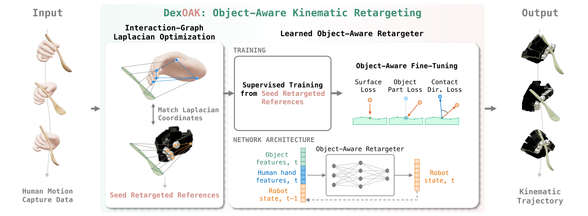

Preserve hand–object interaction.
Interaction-graph seeds train a reusable retargeter, refined with object-aware contact losses.

Different hands. The same intent. DexOAK turns human hand–object motion into object-aware robot references, then refines them into physical interactions.
Interaction-graph seeds train a reusable retargeter, refined with object-aware contact losses.
Better kinematic references improve residual RL and transfer to unseen data without per-frame optimization.
State-of-the-art results on OakInk-v2 and ARCTIC; 46/56 open-loop hardware replays across five tasks.
Method, simulation comparisons, and real-robot experiments.
Orbit the scene. Follow the trajectories. Compare the kinematic reference with the motion actually achieved after reinforcement learning.
Views and playback are synchronized.
Loading recorded trajectories…
A UR5 and Allegro hand replay selected successful simulation rollouts. Seven tasks, including interactions held out from retargeter training.
4 / 8 successful replays
Optimize training references once. Retarget new demonstrations with a forward pass.

Match hand–object graph Laplacian coordinates by optimizing robot wrist pose and joints.
Train a feed-forward network on the optimized references, conditioned on the human, object, and previous robot state.
Fine-tune with surface-contact, object-part, contact-direction, collision, and temporal losses.
Residual RL corrects the kinematic reference to execute the interaction under physics.
DexOAK improves each reported state-of-the-art comparison across both hands and datasets.
Higher is better. — not reported. Each method uses its own dynamic refinement. * SPIDER uses more OakInk-v2 sequences; that comparison is indicative.
On Allegro right-hand OakInk-v2 tasks, SRMT rises from 20.6% to 48.2%. Fine-tuning adds 5.0 points over the interaction-graph seed.
SRMT (%) ↑ · Same ManipTrans residual RL
OakInk-v2 → ARCTIC, Allegro: 87.9 ADD-AUC zero-shot; 90.0 after object-aware fine-tuning, near the 91.3 in-domain result.
ADD-AUC (%) ↑ · Same DexMachina RL
Reference-generation speed includes target-data optimization, training, or fine-tuning where required; excludes RL. This experiment uses a different RL backend from the end-to-end comparison above.
Successful simulation policies replayed on UR5 + Allegro. Held-out laptop closure and button press each achieve 10/12.
Preprint metadata · arXiv identifier forthcoming.